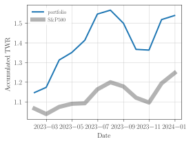

Comparing portfolio returns with benchmark
Introduction
In this post I go over an example of computing a portfolio return (TWR) and comparing it each month with a benchmark.
Example
Initial portfolio investment
Let's say our portfolio has only one stock. At the purchase date, the price was
1import yahooquery as yq
2import datetime
3appl = yq.Ticker('aapl')
4print(appl.history(start=datetime.date(2023,1,1), end=datetime.date(2023,1,4)).close)symbol date aapl 2023-01-03 125.07 Name: close, dtype: float64
We can register this purchase in our ledger with
2023-01-03 * Buy appl
assets:investments:stocks 1 aapl @ $125.07
assets:cashThen we can check our portfolio with,
1hledger -f portfolio.ledger bal acct:investments
1 aapl assets:investments:stocks
--------------------
1 aapl
How much the portfolio value now, can be computed if we have the price now.
Market value after a year
The stock price fluctuates, and at the end of the year, the value is,
1import yahooquery as yq
2import datetime
3appl = yq.Ticker('aapl')
4print(appl.history(start=datetime.date(2023,12,28), end=datetime.date(2023,12,31)).close)
symbol date
aapl 2023-12-28 193.580002
2023-12-29 192.529999
Name: close, dtype: float64
We can see, the stock closed December 29th at 192.53. We can get the stock price each month and record it in the ledger,
1python=~/.venv/general/bin/python
2$python -m investory.values --commodity aapl --begin 2023-01-01
3cat aapl.ledgerP 2023-01-31 "aapl" $143.487961 P 2023-02-28 "aapl" $146.814438 P 2023-03-31 "aapl" $164.233780 P 2023-04-28 "aapl" $168.994476 P 2023-05-31 "aapl" $176.778061 P 2023-06-30 "aapl" $193.453552 P 2023-07-31 "aapl" $195.926956 P 2023-08-31 "aapl" $187.622818 P 2023-09-29 "aapl" $170.984741 P 2023-10-31 "aapl" $170.545319 P 2023-11-30 "aapl" $189.949997 P 2023-12-29 "aapl" $192.529999
ROI first month
Now we want to know the performance of our portfolio. This means, how much our assets appreciated or depreciated in value. Of course, without considering contributions and withdrawls to our portfolio.
With hledger we can obtain the time-weighted return.
For the first month, we get that we started with a cashflow event of 125.07.
This represents the purchase, the value=then can only be obtained because we have --infer-market-price option, which will use the purchase price as market value on this date.
The TWR for the period is 14.73%. Which represents the increase in value without considering contributions/withdrawls. We can check with (/ (- 143.49 125.07) 125.07)0.14727.
1hledger -f portfolio.ledger -f aapl.ledger roi --inv investments --pnl "unrealized" --value=then --monthly --infer-market-price+---++------------+------------++---------------+----------+-------------+--------++---------++------------+----------+ | || Begin | End || Value (begin) | Cashflow | Value (end) | PnL || IRR || TWR/period | TWR/year | +===++============+============++===============+==========+=============+========++=========++============+==========+ | 1 || 2023-01-01 | 2023-01-31 || 0 | $125.07 | $143.49 | $18.42 || 463.54% || 14.73% | 404.25% | +---++------------+------------++---------------+----------+-------------+--------++---------++------------+----------+
Roi each month
We can get the TWR for each month by specifying the end date since we have price directives for each month end. We can see, some very positive months and some negatives as well.
1hledger -f portfolio.ledger -f aapl.ledger roi --inv investments --pnl "unrealized" --value=then --monthly --infer-market-price --end=2024-01-01+-------++------------+------------++---------------+----------+-------------+---------++---------++------------+----------+ | || Begin | End || Value (begin) | Cashflow | Value (end) | PnL || IRR || TWR/period | TWR/year | +=======++============+============++===============+==========+=============+=========++=========++============+==========+ | 1 || 2023-01-01 | 2023-01-31 || 0 | $125.07 | $143.49 | $18.42 || 463.54% || 14.73% | 404.25% | | 2 || 2023-02-01 | 2023-02-28 || $143.49 | 0 | $146.81 | $3.33 || 34.82% || 2.32% | 34.85% | | 3 || 2023-03-01 | 2023-03-31 || $146.81 | 0 | $164.23 | $17.42 || 274.39% || 11.86% | 274.20% | | 4 || 2023-04-01 | 2023-04-30 || $164.23 | 0 | $168.99 | $4.76 || 41.58% || 2.90% | 41.60% | | 5 || 2023-05-01 | 2023-05-31 || $168.99 | 0 | $176.78 | $7.78 || 69.92% || 4.61% | 70.00% | | 6 || 2023-06-01 | 2023-06-30 || $176.78 | 0 | $193.45 | $16.68 || 199.44% || 9.43% | 199.34% | | 7 || 2023-07-01 | 2023-07-31 || $193.45 | 0 | $195.93 | $2.47 || 16.14% || 1.28% | 16.15% | | 8 || 2023-08-01 | 2023-08-31 || $195.93 | 0 | $187.62 | $-8.30 || -39.95% || -4.24% | -39.96% | | 9 || 2023-09-01 | 2023-09-30 || $187.62 | 0 | $170.98 | $-16.64 || -67.69% || -8.87% | -67.70% | | 10 || 2023-10-01 | 2023-10-31 || $170.98 | 0 | $170.55 | $-0.44 || -2.98% || -0.26% | -3.02% | | 11 || 2023-11-01 | 2023-11-30 || $170.55 | 0 | $189.95 | $19.40 || 271.02% || 11.38% | 271.10% | | 12 || 2023-12-01 | 2023-12-31 || $189.95 | 0 | $192.53 | $2.58 || 17.22% || 1.36% | 17.24% | +-------++------------+------------++---------------+----------+-------------+---------++---------++------------+----------+ | Total || 2023-01-01 | 2023-12-31 || 0 | $125.07 | $192.53 | $67.46 || 54.30% || 53.94% | 53.94% | +-------++------------+------------++---------------+----------+-------------+---------++---------++------------+----------+
ROI end of the year
If we multiply the TWR change factor1 for each month, we can get the cummulative return for the year,
1import numpy as np
2monthly_returns_perc = np.array([
3 14.73,
4 2.32,
5 11.86,
6 2.90,
7 4.61,
8 9.43,
9 1.28,
10 -4.24,
11 -8.87,
12 -0.26,
13 11.38,
14 1.36,
15])
16
17accumulated_return = np.prod(monthly_returns_perc / 100 + 1)
18print(f"Performance year: {(accumulated_return - 1)*100:.2f}%")Performance year: 53.94%
With hledger we can also obtain this performance by asking for the yearly value,
1hledger -f portfolio.ledger -f aapl.ledger roi --inv investments --pnl "unrealized" --value=then --yearly --infer-market-price --end=2024-01-01+---++------------+------------++---------------+----------+-------------+--------++--------++------------+----------+ | || Begin | End || Value (begin) | Cashflow | Value (end) | PnL || IRR || TWR/period | TWR/year | +===++============+============++===============+==========+=============+========++========++============+==========+ | 1 || 2023-01-01 | 2023-12-31 || 0 | $125.07 | $192.53 | $67.46 || 54.30% || 53.94% | 53.94% | +---++------------+------------++---------------+----------+-------------+--------++--------++------------+----------+
Comparing performance to a benchmark
We can compare to a benchmark in many different ways. One way is to check how much the index grew during the year.
1import yahooquery as yq
2import datetime
3spx = yq.Ticker('^spx')
4print(spx.history(start=datetime.date(2023,1,1), end=datetime.date(2023,1,4)).close)
5print(spx.history(start=datetime.date(2023,12,29), end=datetime.date(2023,12,31)).close)symbol date ^spx 2023-01-03 3824.139893 Name: close, dtype: float64 symbol date ^spx 2023-12-29 4769.830078 Name: close, dtype: float64
We can then compute the growth for one share of the index,
1year_return = (4769.830078 - 3824.139893) / 3824.139893
2print(f"Performance year: {(year_return)*100:.2f}%")Performance year: 24.73%
Using hledger to compute the index return
We can also use hledger to compute the performance of the index for the same period as our portfolio. With this we can get the same data points as our porfolio. To do that, we need the a hypotetical portfolio with the index share.
2023-01-03 * Benchmark portfolio
assets:investments:stocks 1 ^spx @ $3824.139893
assets:cashThen we need the price of the index2 at the end of each month,
1python=~/.venv/general/bin/python
2$python -m investory.values --commodity ^spx --begin 2023-01-01
3cat ^spx.ledgerP 2023-01-31 "^spx" $4076.600098 P 2023-02-28 "^spx" $3970.149902 P 2023-03-31 "^spx" $4109.310059 P 2023-04-28 "^spx" $4169.479980 P 2023-05-31 "^spx" $4179.830078 P 2023-06-30 "^spx" $4450.379883 P 2023-07-31 "^spx" $4588.959961 P 2023-08-31 "^spx" $4507.660156 P 2023-09-29 "^spx" $4288.049805 P 2023-10-31 "^spx" $4193.799805 P 2023-11-30 "^spx" $4567.799805 P 2023-12-29 "^spx" $4769.830078
With this price at the end of each month we can compute the performance monthly or yearly. Let's check the yearly change for the index. We can see that we get the same value as before for the year change.
1hledger -f benchmark.ledger -f ^spx.ledger roi --inv investments --pnl "unrealized" --value=then --yearly --infer-market-price --end=2024-01-01+---++------------+------------++---------------+--------------+--------------+-------------++--------++------------+----------+ | || Begin | End || Value (begin) | Cashflow | Value (end) | PnL || IRR || TWR/period | TWR/year | +===++============+============++===============+==============+==============+=============++========++============+==========+ | 1 || 2023-01-01 | 2023-12-31 || 0 | $3824.139893 | $4769.830078 | $945.690185 || 24.88% || 24.73% | 24.73% | +---++------------+------------++---------------+--------------+--------------+-------------++--------++------------+----------+
Tracking performance over time
We can track the performance at the end of each year with a percentage change for the portfolio and index. Like we did, our portfolio at the year os 2023 grew 53.94% and the index only grew 24.73%. This means that our allocation of assets (only Apple in this case) in our portolio beat the market (US).
However would be nice to have a track of performance over time with monthly acummulated returns. For instance,
- First month our portfolio increased in 14.73%, then we check how much the index changed this month.
- Second month, our portolio increased (* (- (* 1.1473 1.0232) 1) 100)17.39. Which is the accumulated over the two first returns.
And repeating for the whole period, plotting the accumulated return each month.
We can do that by saving the monhthly TWR for the portfolio and for the benchmark,
1hledger -f portfolio.ledger -f aapl.ledger roi --inv investments --pnl "unrealized" --value=then --monthly --infer-market-price --end=2024-01-01 > portfolio-twr.txt
2hledger -f benchmark.ledger -f ^spx.ledger roi --inv investments --pnl "unrealized" --value=then --monthly --infer-market-price --end=2024-01-01 > benchmark-twr.txtThen we can just load that with python and plot the cummulated value,
1import matplotlib.pyplot as plt
2import figtex; figtex.style()
3import pandas as pd
4
5files = {
6 "portfolio-twr.txt": dict(label="portfolio", linewidth=2),
7 "benchmark-twr.txt": dict(label="S\&P500", linewidth=6, alpha=.3, color="black"),
8}
9
10fig, ax = plt.subplots(figsize=(4, 3))
11for file, params in files.items():
12 # read the ascii formatted table
13 # regex:
14 # \s* matches one or more spaces
15 # \|\|? matches one or two |
16 df: pd.DataFrame = pd.read_csv(file,
17 sep=r'\s*\|\|?\s*',
18 skipfooter=4, skiprows=1, engine='python', skipinitialspace=True)
19 # remove columns with no data
20 df = df.drop(['Unnamed: 0', 'Unnamed: 1', 'Unnamed: 11'], axis=1)
21 # remove row with no data
22 df = df.drop([0], axis=0)
23 print(df)
24
25 end_dates: pd.Series = pd.to_datetime(df["End"], format="%Y-%m-%d").rename("end_dates")
26 twr: pd.Series = df["TWR/period"].rename("twr")
27 twr = twr.str.replace('%', '').astype(float)
28 twr = twr / 100 + 1
29
30 # get the cumulative product which aggregates the result for the period
31 ax.plot(end_dates.values, twr.cumprod(), **params)
32
33ax.set(xlabel="Date",
34 ylabel="Accumulated TWR")
35ax.legend()
We can see that the S&P500 is larged influenced by the Apple stock movement.
(1 + TWR) meaning the change experienced in the period
In yahoo finance the S&P 500 index ticker is ^SPX https://finance.yahoo.com/quote/%5Espx/?guccounter=1